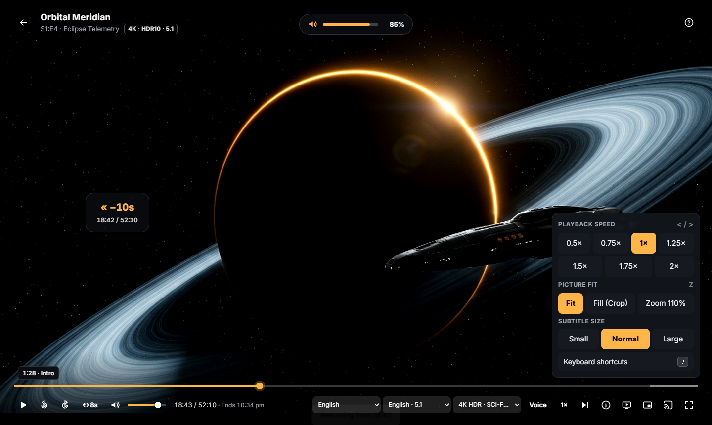
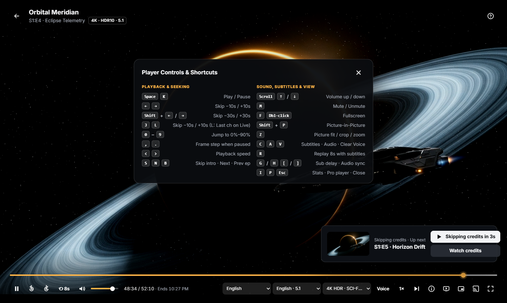
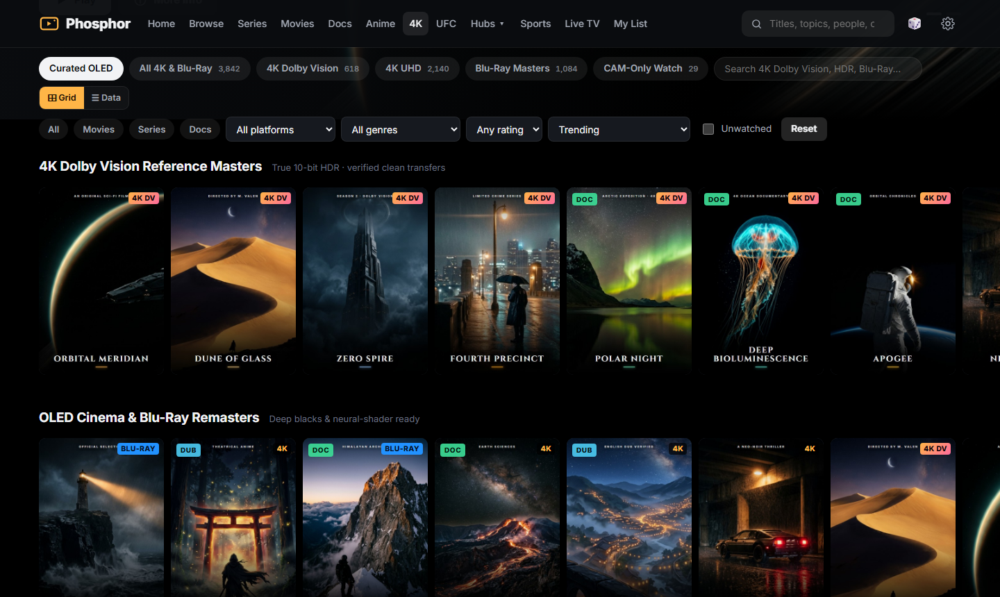
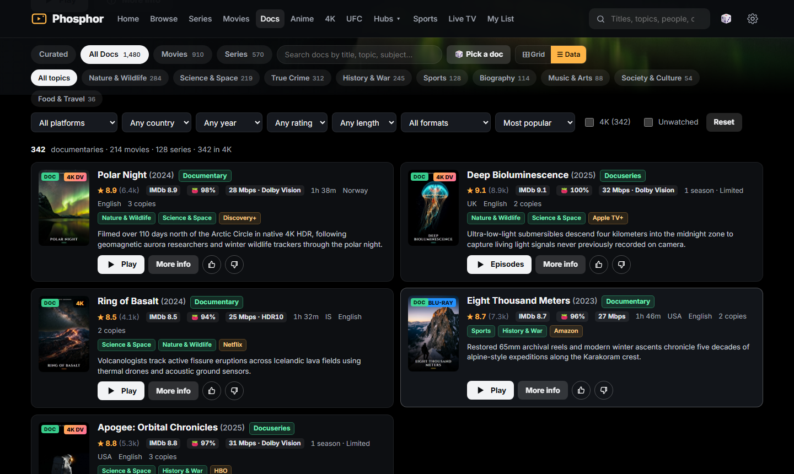
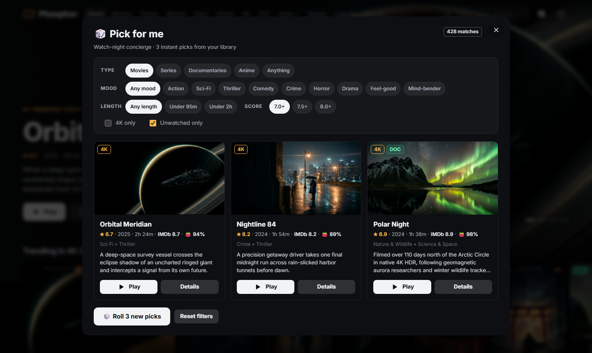
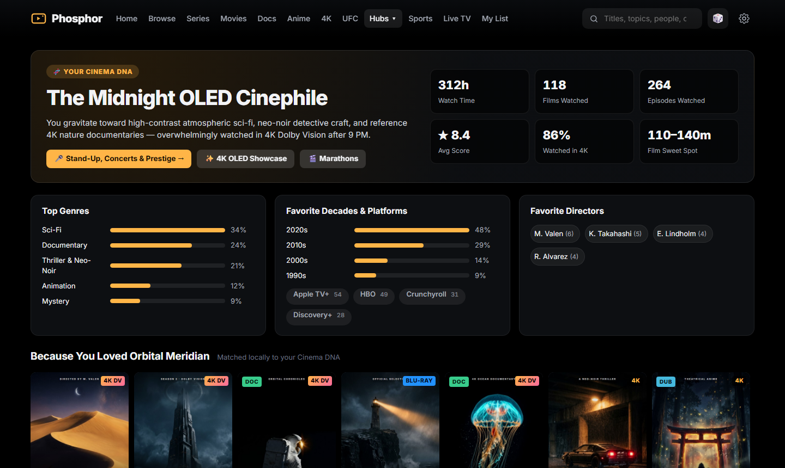
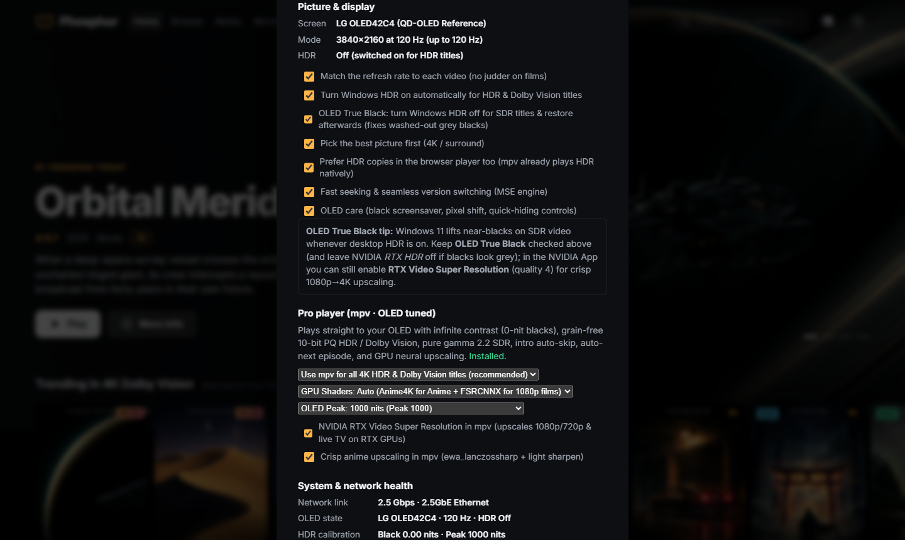
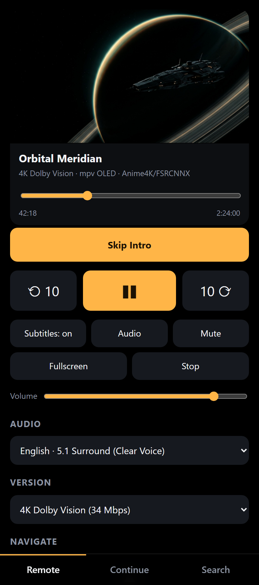

Every screen renders on pure #000000 black for zero glow on OLED panels. Captured directly from Phosphor using synthetic catalog data.

Cinema browser player with OSD HUDs
0 ms in-buffer MSE seeks, drag-to-scrub with buffered track and Intro/Credits markers, scroll-wheel volume HUD, Ends-at clock, playback speed, Picture Fit/Crop, subtitle size, and Picture-in-Picture.

5-layer auto-skip & focus-free shortcuts
IntroDB, TheIntroDB, AniSkip, MKV chapters, and local acoustic fingerprinting power automatic recap/intro skipping, 3 s credits auto-next, and capture-phase shortcuts that work from anywhere.

4K OLED catalog & multi-variant quality engine
Hides CAM and Telesync rips, ranks 4K Dolby Vision, 4K HDR, 4K Dolby Audio, and Blu-Ray copies, merges cross-variant series episodes, and attaches clean 4K upgrades with an English-audio safety gate.

Documentaries hub in data view
Sorts documentaries into 9 topics and displays IMDb scores, Rotten Tomatoes scores, probed bitrate, and HDR tags.

Watch-night picker
Filters by media type, mood, length, score, 4K availability, and unwatched state to return 3 non-repeating picks.

Local Cinema DNA
Calculates watch time, 4K share, top genres, favorite decades, and directors strictly on your own disk.

OLED True Black, shaders, and display health
Matches refresh rate, disables Windows HDR for SDR video, inspects your Windows HDR ICC profile for 0.00 nit compliance, and toggles neural shaders.

QR-paired LAN phone remote
Runs optionally on port 7880 for touch seeking, skipping intros, switching audio tracks and copies, and D-pad couch control from any phone browser.